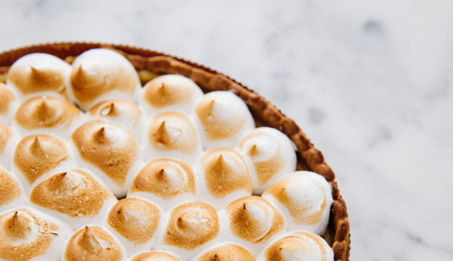

El clásico Lemon Pie
Es el preferido de los que les gusta lo dulce, pero no lo empalagoso. El Lemon pie es una tarta, es decir, una base de masa y un relleno. Como su nombre lo indica, está hecha con jugo de limón, azúcar y huevos. Todo eso mezclado hace el famoso custard, el relleno cremoso amarillo que es tan típico del Lemon pie.
Ingredientes
Para la masa
- 200g. de harina 0000
- 50g. azúcar
- 1 huevo
- 100g. de manteca
Para la crema
- 150cc. de jugo de limón
- 1 cucharada de ralladura de limón
- 4 yemas
- Leche condensada
Para el merengue
- 240g. de azúcar
- 3 claras
- 150cc. de jugo de limón
- 1 cucharada de ralladura de limón
- 4 yemas
- Leche condensada